Chapter 14 Regression Trees and CART
14.1 Introduction
Let’s think about the regressogram estimate again.
The regressogram estimate of the regression function is a piecewise constant function that is constant within each of \(p\) “bins” \[\begin{equation} \hat{m}_{h_{n}}^{R}(x) = \frac{1}{n_{k,h_{n}}}\sum_{i=1}^{n} Y_{i} I(x_{i} \in B_{k}), \qquad \textrm{ if } x \in B_{k} \nonumber \end{equation}\]
Figure 14.1 shows an example of a regressogram estimate with 3 bins.
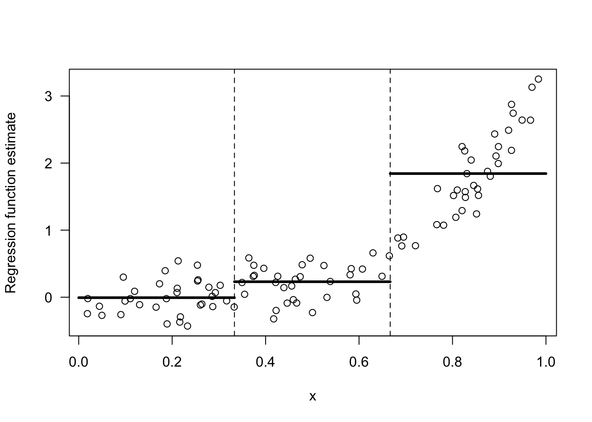
Figure 14.1: Regressogram estimate with the 3 bins: [0,1/3), [1/3, 2/3), [2/3, 1).
Suppose we were forced to combined two adjacent bins to estimate the regression function. For the data shown in 14.1, which two bins should we combine if we were forced to do so? The only options here are to combine bins 1 and 2 or to combine bins 2 and 3.
I would say we should combine bins 1 and 2. Look at Figures 14.2 and 14.3 for a comparison of these two choices.
The responses \(Y_{i}\) change much more over the range of the third bin than they do over the first and second bins. Hence, an intercept model for the first two bins is not all that bad.
In contrast, an intercept model for the last two bins is a terrible model.
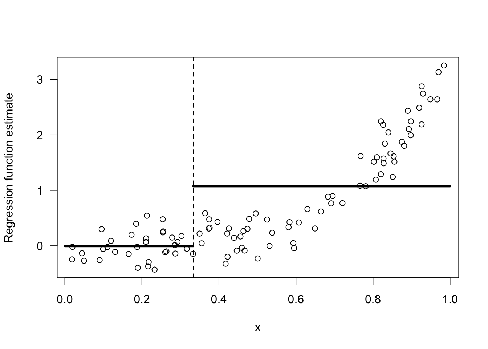
Figure 14.2: Regressogram estimate with the 2 bins: [0,1/3), [1/3, 1).
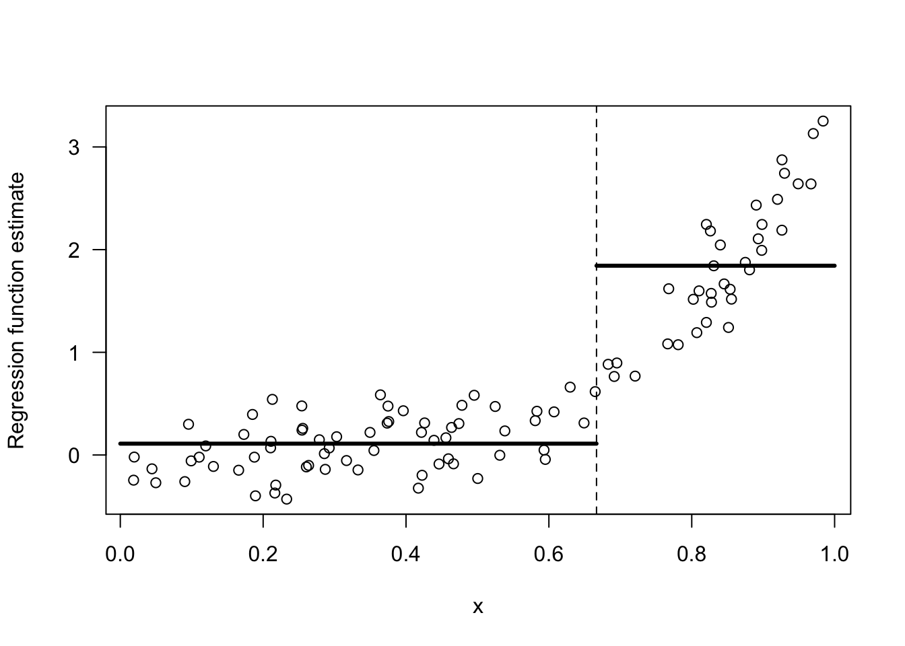
Figure 14.3: Regressogram estimate with the 2 bins: [0,2/3), [2/3, 1).
The intuition for why the choice of bins \([0,2/3), [2/3, 1)\) is better than the choice of bins \([0,1/3), [1/3, 1)\) can be formalized by considering the within-bin variation of \(Y_{i}\).
For two bins \(B_{1}\) and \(B_{2}\), the within-bin sum of squares (WBSS) of \(Y_{i}\) is \[\begin{equation} \textrm{WBSS} = \sum_{k=1}^{2} \sum_{i=1} (Y_{i} - \bar{Y}_{k})^{2}I(x_{i} \in B_{k}) \nonumber \end{equation}\] where \(\bar{Y}_{k} = \frac{1}{n_{k}}\sum_{i=1}^{n} Y_{i}\) denotes the mean of the responses within the \(k^{th}\) bin.
You want to choose the bins in order to minimize the within-bin sum of squares. The reason for this is that: if the within-bin sum of squares is low, an intercept model for each bin will fit the data very well.
## [1] 62.72984- The WBSS when using the bins \([0,2/3), [2/3, 1)\) is
## [1] 20.1924914.2 Regression Trees with a Single Covariate
For a single covariate, regression trees estimate the regression function by a piecewise constant function that is constant within each of several bins. We will focus on the well-known CART (Classification and Regression Trees) method for using regression trees.
More generally, with multivariate covariates, CART will fit a regression function that is constant within each of many multi-dimensional “rectangles”.
The main difference between CART and the regressogram is that the placements and widths of the bins in CART are chosen in a more selective manner than the regressogram.
Specifically, rather than just using a collection of bins of fixed width, CART chooses where to place the bin boundaries by considering the resulting within-bin sum of squares.
CART constructs the bins through sequential binary splits of the x axis.
In the first step, CART will divide the covariates into two bins \(B_{1}\) and \(B_{2}\). These bins have the form \(B_{1} = (-\infty, t_{1})\) and \(B_{2} = [t_{1}, \infty)\).
At the next step, CART will create \(4\) bins by further dividing each of these two bins into two more bins. So, we will have four bins \(B_{11}, B_{12}, B_{21}, B_{22}\).
Bins \(B_{11}\) and \(B_{12}\) will have the form \(B_{11} = (-\infty, t_{11})\) and \(B_{12} = [t_{11}, t_{1})\), and bins \(B_{21}\) and \(B_{22}\) will have the form \(B_{21} = [t_{1}, t_{21})\) and \(B_{22} = [t_{21}, \infty)\).
You can repeat this process to get smaller and smaller bins. Usually, this process will stop once a threshold for the minimum number of observations in a bin has been reached.
This sequential process for constructing bins is typically depicted with a binary decision tree.
Figure 14.4 shows the decision tree representation of a CART regression function estimate with \(4\) bins.
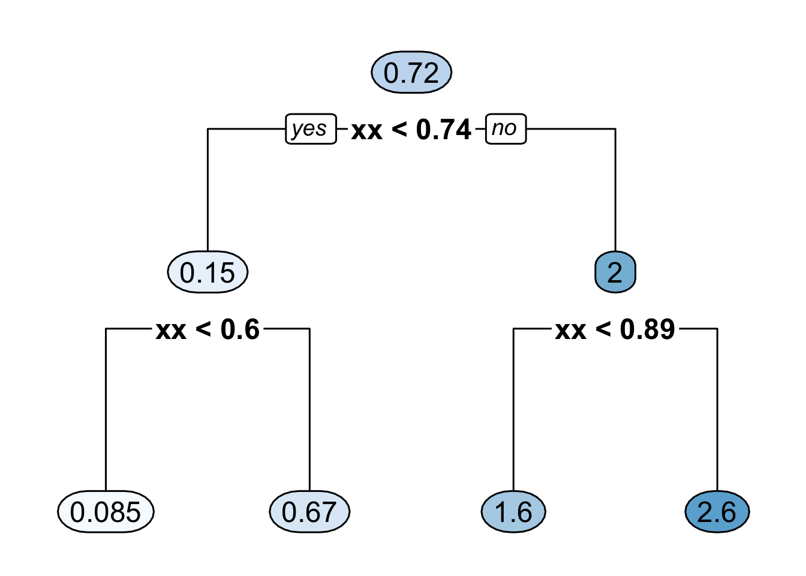
Figure 14.4: Binary decision tree representing a regression function estimate with 4 bins where it is assumed that all the covariates are between \(0\) and \(1\). The 4 bins here are [0, 0.6), [0.6, 0.74), [0.74, 0.89), [0.89, 1).
- Figure 14.5 shows the regression function estimate which corresponds to the decision tree shown in Figure 14.4.
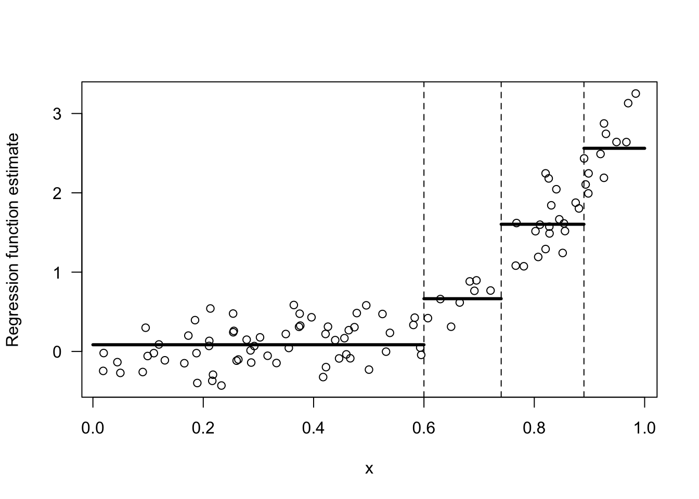
Figure 14.5: Regression function estimate that corresponds to the decision tree shown in the previous figure.
14.2.1 Determining the Split Points
The first two bins are determined by the “split point” \(t_{1}\). To find this split point, CART looks at the within-bin sum of squares induced by a splitting point \(t\). \[\begin{eqnarray} \textrm{WBSS}(t) &=& \sum_{k=1}^{2} \sum_{i=1}^{n} (Y_{i} - \bar{Y}_{k})^{2}I(x_{i} \in B_{k}) \nonumber \\ &=& \sum_{i=1}^{n} (Y_{i} - \bar{Y}_{1})^{2}I(x_{i} < t) + \sum_{i=1}^{n} (Y_{i} - \bar{Y}_{2})^{2}I(x_{i} \geq t) \nonumber \end{eqnarray}\]
The first split point \(t_{1}\) is the value of \(t\) which minimizes this within-bin sum of squares criterion. That is, \[\begin{equation} t_{1} = \textrm{argmin}_{t} \textrm{ WBSS}(t) = \textrm{argmin}_{t \in \{x_{1}, \ldots, x_{n} \}} \textrm{ WBSS}(t) \nonumber \end{equation}\]
To find \(t_{1}\), we only have to take the minimum over the set of covariates since the value of \(\textrm{WBSS}(t)\) only changes at each \(x_{i}\).
Figure 14.6 shows a plot of \(\textrm{WBSS}(t)\) vs. \(t\) for the data shown in Figures 14.1 - 14.3.
Figure 14.6 suggests that the value of \(t_{1}\) will be around \(0.75\).
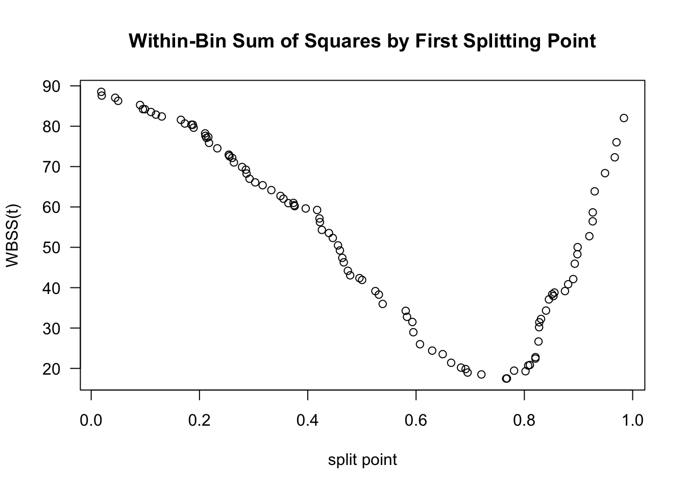
Figure 14.6: Plot of WBSS(t) vs. t for the data shown in the above figures.
The splitting point “partitions” the data into two datasets. The indices of these datasets are defined as \[\begin{eqnarray} \mathcal{D}_{1} &=& \big\{ (Y_{i}, x_{i}): x_{i} < t_{1} \big\} \nonumber \\ \mathcal{D}_{2} &=& \big\{ (Y_{i}, x_{i}): x_{i} \geq t_{1} \big\} \nonumber \end{eqnarray}\]
After finding \(t_{1}\), we can find the next two splitting points \(t_{11}\) and \(t_{21}\) by using the exact same procedure we used to find \(t_{1}\).
That is, \(t_{11}\) and \(t_{21}\) are given by \[\begin{eqnarray} t_{11} &=& \textrm{argmin}_{t} \textrm{ WBSS}_{1}(t) \nonumber \\ t_{21} &=& \textrm{argmin}_{t} \textrm{ WBSS}_{2}(t) \nonumber \end{eqnarray}\] where \(\textrm{WBSS}_{a}(t)\) is the within-bin sum of squares for dataset \(\mathcal{D}_{a}\): \[\begin{equation} \textrm{WBSS}_{a}(t) = \sum_{i \in \mathcal{D}_{a}} (Y_{i} - \bar{Y}_{1a})^{2}I(x_{i} < t) + \sum_{i \in \mathcal{D}_{a}} (Y_{i} - \bar{Y}_{2a})^{2}I(x_{i} \geq t) \nonumber \end{equation}\]
The splitting points \(t_{11}\) and \(t_{21}\) will further partition the dataset into \(4\) datasets. Additional splitting points \(t_{12}, t_{22}, t_{32}, t_{42}\) which further partition the dataset, can be found by minimizing the within-bin sum of squares for each of these \(4\) datasets.
This algorithm for constructing smaller and smaller bins is often referred to as recursive partitioning.
14.3 Regression Trees With Multiple Covariates
When we have multivariate covariates where \(\mathbf{x}_{i} = (x_{i1}, \ldots, x_{ip})\), CART will partition the covariate space into multivariate “rectangles”.
An example of a CART-type regression function estimate for the case of two covariates is shown in Figure 14.7
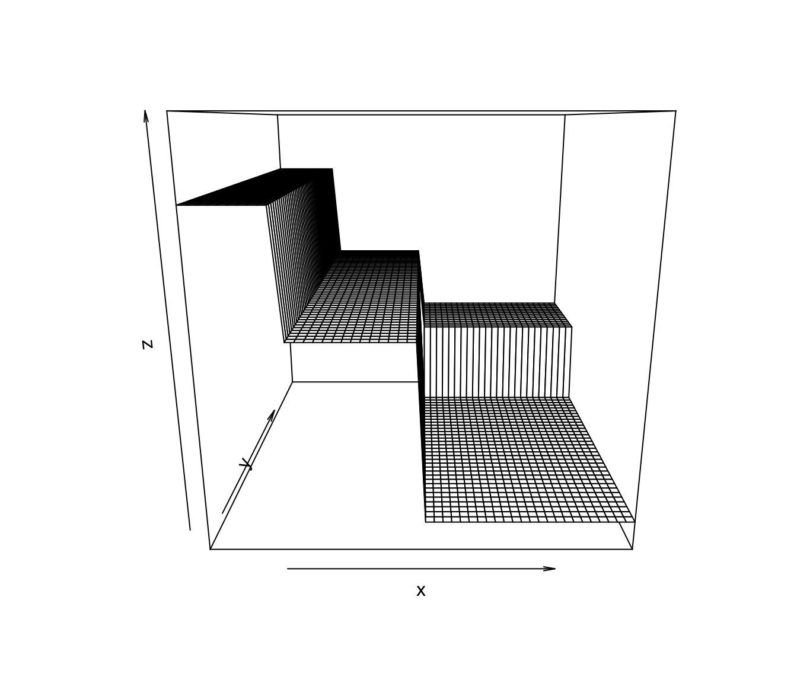
Figure 14.7: An example of a CART-type estimate of a regression function that has two covariates.
One advantage of CART is that it can easily handle covariates of different types, for example, both continuous and binary covariates.
You can see an example of this by looking at the
bonedata. This dataset has both sex and age as covariates.A CART regression tree for the bone data using both age and sex is shown in Figure 14.8.
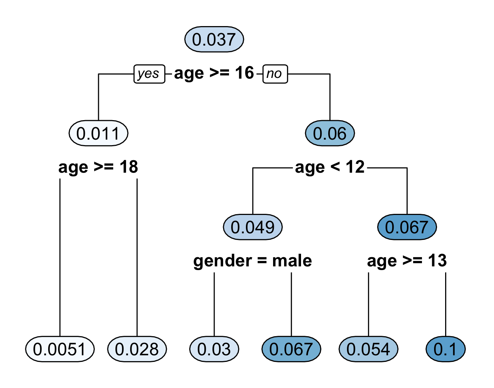
Figure 14.8: Regression tree for the bone data. This fitted regression tree has 6 bins.
- Figure 14.9 plots the regression function estimate which corresponds to the decision tree shown in Figure 14.8. Notice that the regression function estimate for men vs. women only differs for ages \(< 12\).
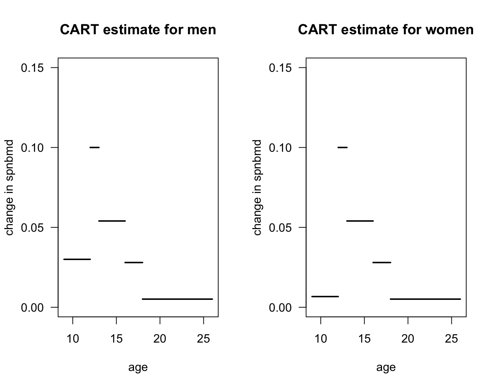
Figure 14.9: Plot of regression function estimate that corresponds to the decision tree in the previous figure.
14.3.1 Recursive Partitioning with Multiple Covariates
For each observation, we have a vector of \(p\) covariates \(\mathbf{x}_{i} = (x_{i1}, \ldots, x_{ip})\).
When splitting on the \(j^{th}\) covariate with splitting point \(t\) (for the first split), we will define the within-bin sum of squares as \[\begin{eqnarray} \textrm{WBSS}(t, j) &=& \sum_{i=1}^{n} (Y_{i} - \bar{Y}_{1j})^{2}I(x_{ij} < t) + \sum_{i=1}^{n} (Y_{i} - \bar{Y}_{2j})^{2}I(x_{ij} \geq t) \nonumber \end{eqnarray}\] where \(\bar{Y}_{1j} = \sum_{i=1}^{n}Y_{i}I(x_{ij} < t)/\sum_{i=1}^{n} I(x_{ij} < t)\) and \(\bar{Y}_{2j} = \sum_{i=1}^{n}Y_{i}I(x_{ij} \geq t)/\sum_{i=1}^{n} I(x_{ij} \geq t)\).
Goal: Choose the splitting value and splitting variable pair \((t,j)\) that minimizes \(\textrm{WBSS}(t, j)\).
After obtaining the first splitting variable-splitting value pair \((t_{best}, j_{best})\), you can repeat the same procedure on the two dataset on either side of the split. \[\begin{eqnarray} \mathcal{D}_{1} &=& \big\{ (Y_{i}, x_{ij_{best}}): x_{ij_{best}} < t_{best} \big\} \nonumber \\ \mathcal{D}_{2} &=& \big\{ (Y_{i}, x_{ij_{best}}): x_{ij_{best}} \geq t_{best} \big\} \nonumber \end{eqnarray}\]
You can repeat the same procedure to “grow out” the tree.
One can keep repeating this procedure to grow out a large tree.
You can keep repeating the procedure until some stopping criterion is met.
A common choice is to keep growing the tree until the number of observations in a terminal node (or leaf) below a split would be less than some pre-specified value such as \(5\).
14.3.2 Tree Pruning
A tree which has been grown until the minimal node stopping criterion will typically have too much variance.
- Denote this “fully grown” tree by \(T_{full}\).
“Pruning” a decision tree to have fewer terminal nodes will typically have better predictive performance.
Let \(T\) denote a decision tree and let \(|T|\) denote the number of terminal nodes of \(T\).
To evaluate different sub-trees of the full tree \(T_{full}\), a penalized objective function is typically used.
Penalized criterion to minimize: \[\begin{equation} C_{\alpha}(T) = \sum_{m=1}^{|T|} n_{m}R_{m}(T) + \alpha |T| \end{equation}\] where \(n_{m}\) is the number of observations in the \(m^{th}\) terminal node of tree \(T\)
\(R_{m}(T)\) is the residual sum of squares for observations in the \(m^{th}\) terminal node of \(T\) and is defined as \[\begin{equation} R_{m}(T) = \sum_{i=1}^{n} \big( Y_{i} - \bar{Y}_{m} \big)^{2} \end{equation}\] where \(\bar{Y}_{m}\) is the mean of \(Y_{i}\) among observations assigned to the \(m^{th}\) terminal node of \(R_{m}(T)\).
14.4 Fitting Regression Trees in R
To illustrate the use of regression trees in R, we can use the
Bikesharedata.This has 8,645 observations and 15 variables.
Outcome of interest:
bikers(Hourly count of rental bikes)Continuous Covariates:
temp(normalized temperature),atemp(normalized feeling temperature),hum(humidity), andwindspeed.Categorical (more than 2 levels) covariates:
season,weathersitBinary covariates:
holidayandworkingday
## season mnth day hr holiday weekday workingday weathersit temp atemp hum
## 1 1 Jan 1 0 0 6 0 clear 0.24 0.2879 0.81
## 2 1 Jan 1 1 0 6 0 clear 0.22 0.2727 0.80
## 3 1 Jan 1 2 0 6 0 clear 0.22 0.2727 0.80
## 4 1 Jan 1 3 0 6 0 clear 0.24 0.2879 0.75
## 5 1 Jan 1 4 0 6 0 clear 0.24 0.2879 0.75
## 6 1 Jan 1 5 0 6 0 cloudy/misty 0.24 0.2576 0.75
## windspeed casual registered bikers
## 1 0.0000 3 13 16
## 2 0.0000 8 32 40
## 3 0.0000 5 27 32
## 4 0.0000 3 10 13
## 5 0.0000 0 1 1
## 6 0.0896 0 1 1- Convert
season,mnth, andweathersitto factor variables
Bikeshare$season <- factor(Bikeshare$season)
Bikeshare$mnth <- factor(Bikeshare$mnth)
Bikeshare$weathersit <- factor(Bikeshare$weathersit)- The package
rpartis one of the most well-known R packages for fitting single decision-tree models:
The main term which controls the complexity of the fitted tree is the complexity parameter in
rpart- This is like \(\alpha\) in our description of tree pruning
To first fit a full tree that does not penalize tree complexity at all, we should set
cp = 0The following code will fit a regression tree with
bikersas the outcome and all other variables inBikesharetreated as covariates
full_tree <- rpart(bikers ~ . - casual - registered, data = Bikeshare,
control = rpart.control(cp = 0, minsplit = 5))The parameter
minsplit = 5means that 5 observations need to be present in a node in order to consider a split.You can plot this full tree (this will be very messy and hard to read)
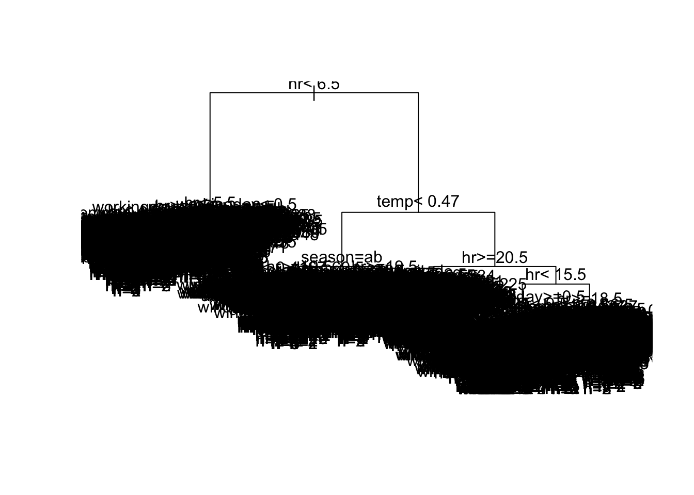
- The
cptablecomponent offull_treereports 5 pieces of information about the within-bin sum of squares after every split.CP- This is the tuning parameter (\(\alpha\)) that penalizes tree size. Smaller values ofCPlead to larger trees.nsplit- Number of internal splits in the tree at that specific CP level.rel error- Within-bin sum of squares evaluated on the training data, relative to the root node.xerror- 10-fold cross-validation estimate of prediction error for this tree.xstdis the standard error of the cross-validation estimatexerror
- Let’s look at the first 8 rows of the
cptablecomponent:
## CP nsplit rel error xerror xstd
## 1 0.3118 0 1.0000 1.0003 0.0179
## 2 0.1414 1 0.6882 0.6884 0.0139
## 3 0.0538 2 0.5468 0.5488 0.0113
## 4 0.0300 4 0.4392 0.4405 0.0092
## 5 0.0246 7 0.3493 0.3510 0.0084
## 6 0.0176 8 0.3247 0.3263 0.0075
## 7 0.0145 10 0.2894 0.2989 0.0070
## 8 0.0117 11 0.2750 0.2890 0.0068To pick the tree which has the smallest cross-validation estimate of predictive performance, you want to look at the
xerrorcolumn of thecptabledata frame.Let’s plot
xerroras a function of the penalty termCP(\(\alpha\))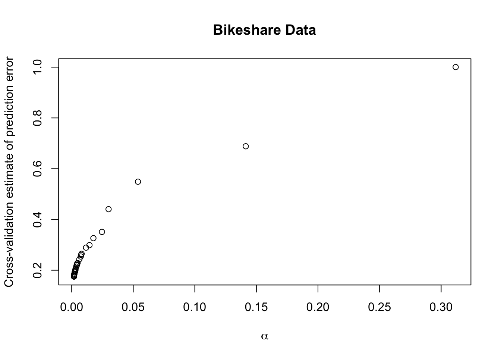
It looks like a very small value of \(\alpha\) has the smallest cross-validation estimate.
We can find the row with the lowest cross-validation estimate with the following code:
## 379
## 379- The size of the “best tree” is quite large:
## CP nsplit rel error xerror xstd
## 0.0001 466.0000 0.0398 0.1090 0.0044- You can fit the “best tree” with the following code:
cp.best <- full_tree$cptable[best_row, "CP"]
best_tree <- rpart(bikers ~ . - casual - registered, data = Bikeshare,
control = rpart.control(cp = cp.best, minsplit = 5))- An alternative to selecting the penalty term with the smallest cross-validation score is to use the “1-SE Rule”.
- This picks the smallest tree where
xerroris within one standard error (xstd) of the minimum valuexerror. - This leads to more interpretable trees which have similar cross-validation estimates to that of the minimum.
- Using the 1-SE rule often has similar predictive performance or not much worse predictive performance than selecting the tree with the smallest cross-validation estimate.
- This picks the smallest tree where
- To select the tree according to the 1-SE rule, let’s first find the 1-SE cutoff value:
onese_thresh <- full_tree$cptable[best_row,"xerror"] + full_tree$cptable[best_row,"xstd"]
onese_thresh## [1] 0.1133936- Then, find the smallest tree where
xerroris less than the 1-SE thresholdonese_thresh
## CP nsplit rel error xerror xstd
## 152 0.0002237307 201 0.07157133 0.1131303 0.004122367
## 159 0.0002092131 209 0.06984801 0.1133348 0.004160211
## 160 0.0002049323 210 0.06963879 0.1132303 0.004160931
## 161 0.0002042726 211 0.06943386 0.1131931 0.004159624
## 162 0.0002038211 212 0.06922959 0.1131412 0.004159547
## 163 0.0002033108 213 0.06902577 0.1128743 0.004149298## CP nsplit rel error xerror xstd
## 0.000224 201.000000 0.071571 0.113130 0.004122- Even using the 1-SE rule, the tree selected is quite large.
- This will be difficult to generate a plot of the decision tree which is not extremely messy.
- You can fit the “1-SE tree” with the following code:
cp.1se <- full_tree$cptable[oneserow, "CP"]
onese_tree <- rpart(bikers ~ . - casual - registered, data = Bikeshare,
control = rpart.control(cp = cp.1se, minsplit = 5))Let’s plot a decision tree using a larger value of \(\alpha\) than what was found by the 1-SE rule.
If we set \(\alpha = 0.013\), this will give us a tree with \(9\) terminal nodes.
short_tree <- rpart(bikers ~ . - casual - registered, data = Bikeshare,
control = rpart.control(cp = 0.013, minsplit = 5))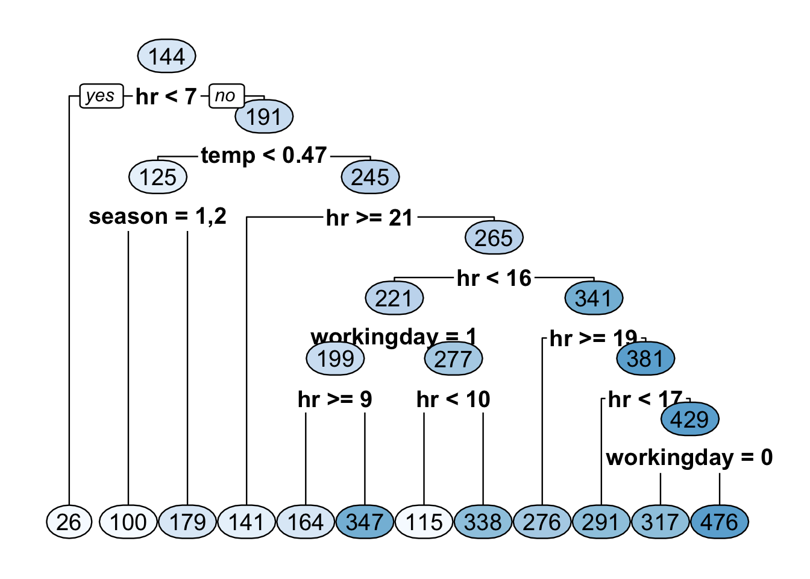
- Plotting this short decision tree suggests that
hris a very important covariate.
- Let’s look at the variable importance scores from the tree chosen from
minimizing the cross-validation estimate of prediction error.
- This is in the
variable.importancecomponent ofbest_tree
- This is in the
## hr temp atemp mnth day season hum
## 95946512.5 27741590.5 27697159.2 24093460.4 22362421.2 18787819.7 9787881.4
## workingday weekday weathersit windspeed holiday
## 8711169.5 5928351.2 3215345.1 2551534.4 909975.1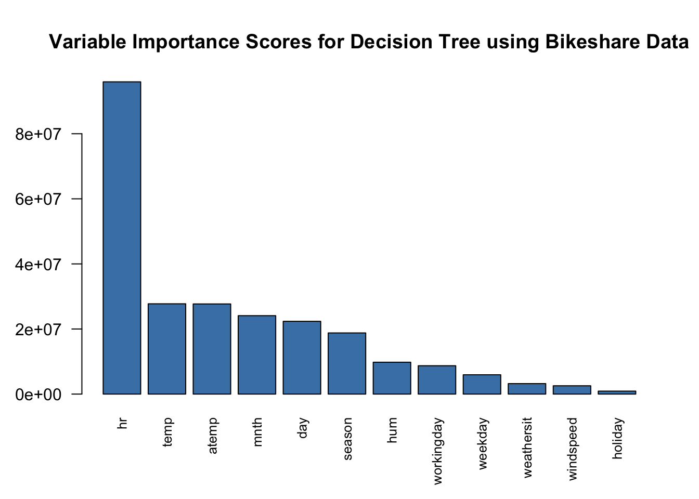